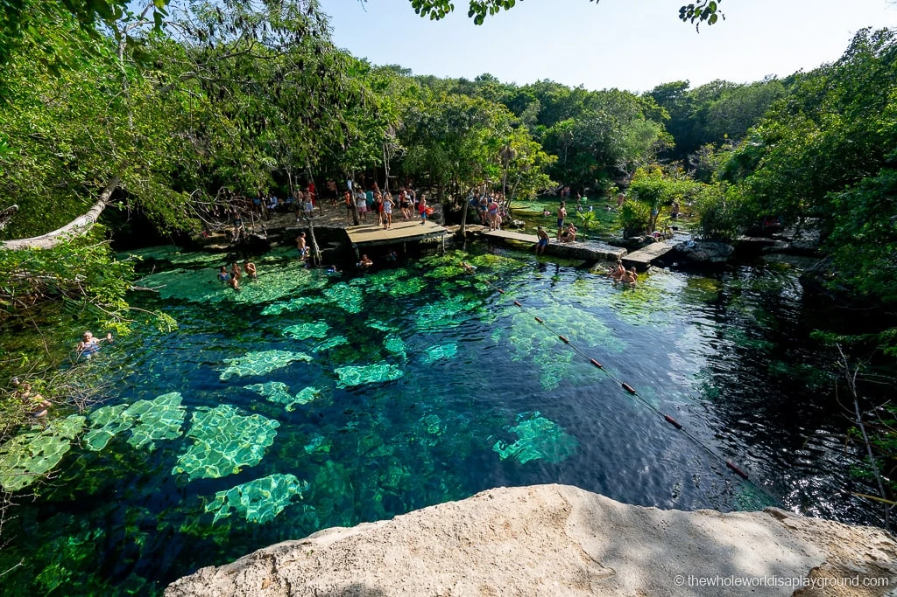
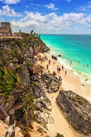
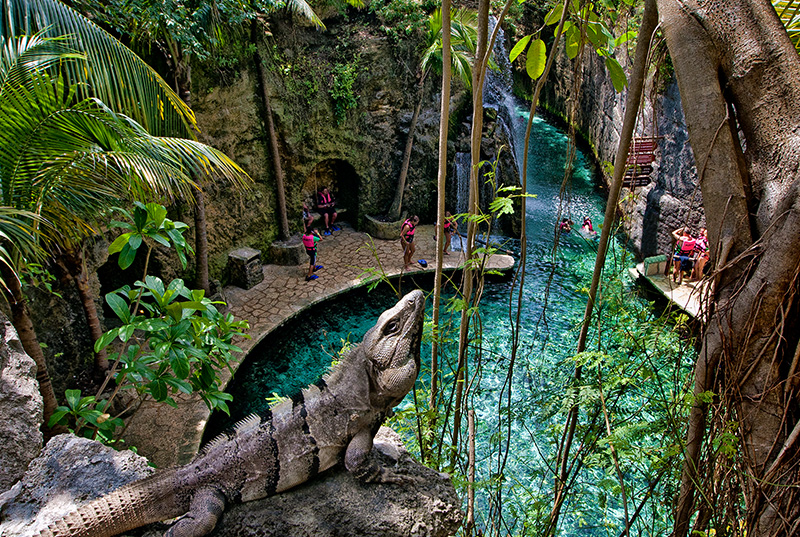
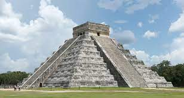
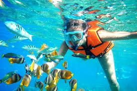

Things to Do
Swim in a Cenote
- The Riviera Maya has some incredible swimming holes with crystal clear waters which are known as cenotes. Swimming in a cenote is one of the most unique and fun experiences in the Riviera Maya.

Visit Tulum Beach
- Tulum Beach might be the perfect place to seek out during your trip to Rivera Maya. Stroll along the seaside, or check out its top-notch restaurants.

Xcaret Eco Theme Park
- Part theme park, part wildlife sanctuary and part archaeological site, Xcaret Park has dozens of attractions and activities to keep the whole family occupied.

Visit Chitchen Itza
- If you like history, this is the place for you! Walk along the paths of the ancient Mayans. A full tour of the grounds and you can even climb up the steps just how the Mayans did. A history packed aventure the whole family can enjoy

Puerto Morelos Reef Snorkling Tour
- Get a chance to snorkel at the worlds second largest barrier reef. This is a guided visit to 2 reef locations in the reef. Be able to brag to your friend about the rareley seen exotic fish and colorful coral formations. When your done walk along the Puerto Morelos Fish Market your can be treated to lunch by our many vendors

Some Places to Stay